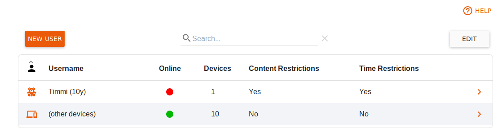
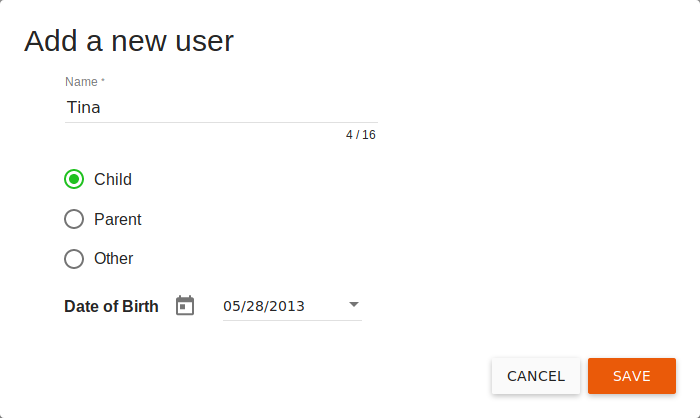
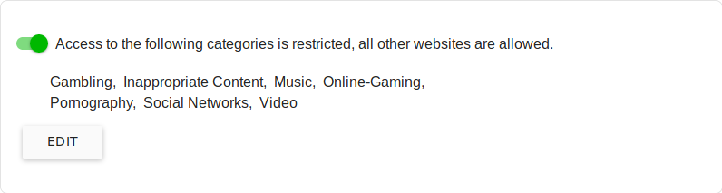
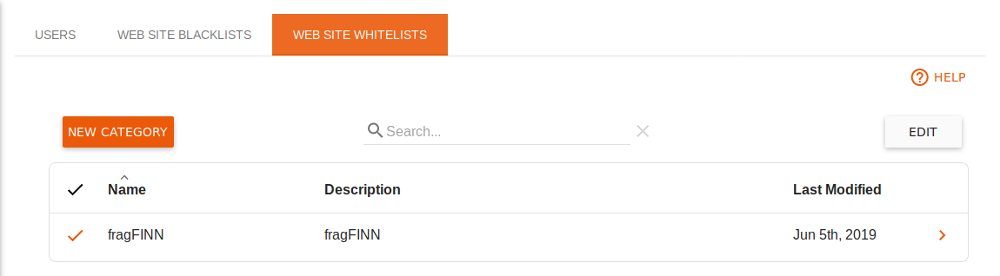

Deutsch | English
eBlocker Base ✕ / eBlocker Pro ✕ / eBlocker Family ✓
This page is further divided into the following sections:
Here you can see an overview of the users you have created.

Create a new user
You can create a new user by clicking the New User button.

You can specify a name, an age-appropriate role, and the date of birth for this user.
You can make further settings by editing the user.
Edit a user
To edit a user's settings, click the user's entry in the table once.
You can now specify both the basic user data, such as date of birth, role and an optional PIN up to 16 digits long for this user. If a device is protected by the eBlocker Parental Control, this PIN must be entered when the user changes.
Assign all devices that are also used by children, teenagers and guests to them by clicking the Add Device button to open a corresponding dialog box for selecting the device(s).

You can use Edit to remove one or more devices from the table. Devices that have not been assigned to a user are not subject to parental controls and are listed under (other devices).

The settings of the Blocked Website Categories section are preset with recommended values depending on the age of the child. Parents and guests are not initially restricted. Select the Edit button to check the settings and define additions or exceptions if necessary.
You will see a selection of access restrictions when you click the Edit button.

There are two principles for access restrictions:
The following categories are prohibited. All other websites are allowed.
Here you can select the categories of prohibited websites. If you have created your own categories, these will also be displayed here.
If you activate the Exceptions button, you can select the categories of allowed websites. The exception list of fragFINN is already predefined here.
The exceptions allow you, for example, to prohibit the category Videos, but to allow YouTube for this protection profile.
The following categories are allowed. All other websites are prohibited.
Here you can select categories of allowed websites. The exception list of fragFINN is already activated. All other websites are then forbidden for this protection profile.
Time limits
If no time restrictions are active, they can be activated by clicking on the button for the current user details.

If time restrictions are active, you will see an overview of the permitted times-of-use.
With a click on the pen you can change the stored times by clicking on the (-) symbol to remove the corresponding line and thus withdraw the usage permission for this period.
Limiting the period of use
If the daily usage time is not limited, you can activate it by clicking on the button for the current user details.

If the daily usage time is limited, you will see an overview of the permitted usage times. These can be adjusted by selecting the Edit button.
Here you can see a list of categories of prohibited websites.

Our fixed categories are constantly maintained by us for you and are updated every working day.
Create a new category
If you click on the New Category button, you can create your own category of prohibited websites.
Enter a name and a description. Now you can enter your own domains in the list, which should be prohibited.
If you click on the Save button, your list will be added to the list of prohibited categories and can then be assigned to a protection profile.
Delete categories
If you want to delete categories, click on the Edit button in the overview of categories. Then select the categories you want to delete and click the Delete Categories button.
The categories we have created cannot be deleted.
These categories of expressly permitted websites may be used in the Parental Controls Profiles to allow access to the relevant websites.
